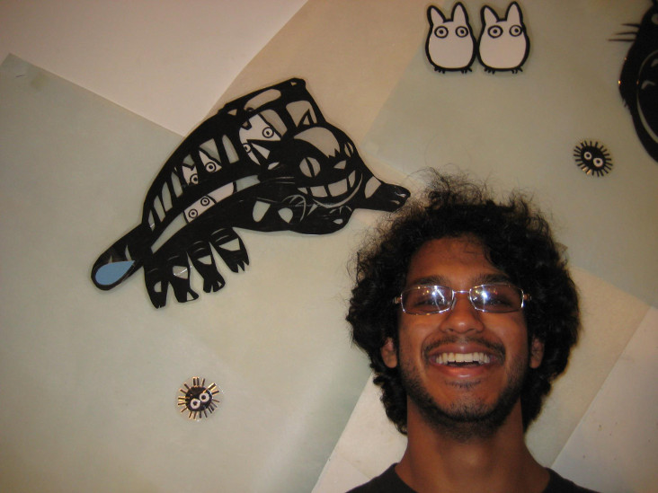
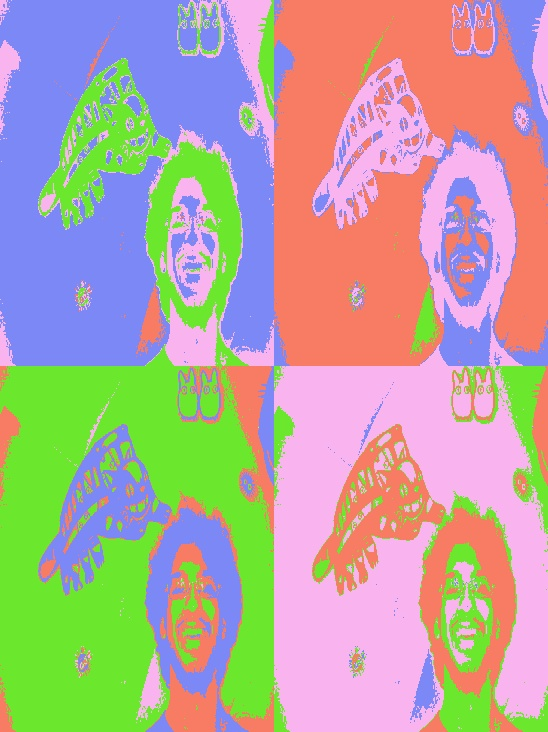
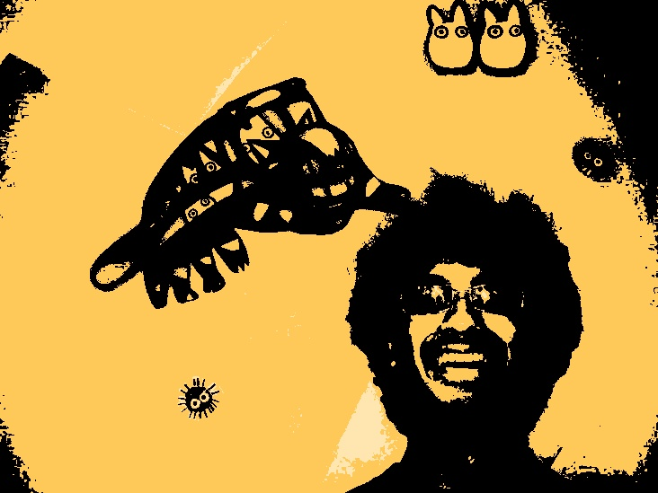

Problem Definition
Give a concise description of current problem. For instance, what needs to be solved and why it is useful? Do you make any assumptions? What are the difficulties?
The purpose of the first assignment was to first create a function to transform an image to look like an Andy Warhol pop-art version of the image. The second part of the assignment was to create a function to apply my own modifications to the original image. What needs to be solved is to figure out how to read an image from file into an opencv Mat object, then manipulate that object in order to get information about the intensity of every pixel in the image and then to figure out how to manipulate the RGB values of a certain pixel. For this assignment I made the assumption that we could use the opencv library. The difficulties were mainly becoming acquainted with C++ and utilizing the opencv library and documentation.
Method and Implementation
Give a concise description of the implemented method. For example, you might describe the motivation of current idea, the algorithmic steps or any formulation used in current method.
Briefly outline the functions you created in your code to carry out your algorithmic steps described above.
To implement the Warhol functionality I first used an opencv function resize to half the length and height. I then created an array of four Vec3b object to represent a pixel's color. Afterwards I iterated through the different rows and columns and fond the intensity at each vector(i,j). Depending on which four groups [0-64, 65 -127, 128-192, 193-255] the intensity fell into, a different color to change the pixel to was chosen. I then created a blank image to hold four of the shrunk images as tiles, and wrote one tile at a time into the blank image after changing the pixels colors. I did this 3 other times by putting the code into a for loop. (Note: For some reason in the for loop I had to do cols*3 and vect(i,j/3) otherwise the image would be stretched. I'm still not sure why that is). To implement my own function I did a similar method but made the colors different shades of orange and black to create a "Halloween Effect". I also tried experimenting with brightness, contrast, Gaussian Blur, and image warping but it made the effects worse so I took some of it out the final picture. I used some of the opencv library functions such as resize and copy to in order to carry out the steps above.
Experiments
Describe your experiments, including the number of tests that you performed, and the relevant parameter values.
Define your evaluation metrics, e.g., detection rates, accuracy, running time.
I ran this many times and experimented with different values and confirimed manually that the results were similar to the Monroe picture in the assignment description and followed the description. (There weren't really other evaluation metrics I could think of) Running time, my code went through every pixel of the rezied image four times, so the big factor in running time was how many pixels the resized image had.
Results
List your experimental results. Provide examples of input images and output images. If relevant, you may provide images showing any intermediate steps
Below are the original and output images of the program.
Results | ||
| Original Input Image |  | |
| Warhol Output |  | |
| My Modification: Halloween Output |  | |
Discussion
Discuss your method and results:
- What are the strengths and weaknesses of your method?
- Do your results show that your method is generally successful or are there limitations? Describe what you expected to find in your experiments, and how that differed or was confirmed by your results.
- Potential future work. How could your method be improved? What would you try (if you had more time) to overcome the failures/limitations of your work?
One weakness of my method is that it assumes that the picture will be split up into four tiles. If you want to add more tiles you would have to change code around instead of changing a parameter around in the function call. Also color values are hardcoded rgb values so someone would have to go in and change them to get different colors. Otherwise I think the method was pretty efficient and successful. My results show a Warhol looking output so it seems to work pretty well. For my modification I was slightlly disapointed that bluring and changing the contrast and brightness didn't really add much value to the final picture. (blurring actually made it look worse). But I am happy with final output as it stands. Future work would be to extend my modification. I would also like to calcualte a cool warping matrix to the image output. I also think playing around with more and more of the intensity range value cases and use different shades of orange and black to get some kind of gradient.
Conclusions
Based on your discussion, what are your conclusions? What is your main message?
Overall I thought this assignment was fun. I leant a lot about opencv and how to manipulate image objects.
Credits and Bibliography
Cite any papers or other references you consulted while developing your solution. Citations to papers should include the authors, the year of publication, the title of the work, and the publication information (e.g., book name and publisher; conference proceedings and location; journal name, volume and pages; technical report and institution). Material on the web should include the url and date of access.
Credit any joint work or discussions with your classmates.
Consulted with Nick Qiao whenever we had doubts on C++ syntax, opencv documentation, and some implementation ideas. Used opencv tutorials for experimenting with brightness and contrast for the my modification part. Source: http://docs.opencv.org/doc/tutorials/core/basic_linear_transform/basic_linear_transform.html